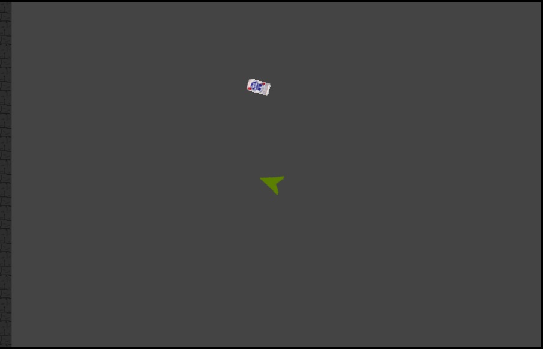

Roommate Wars
Game Design (Devon)
Basic Game Idea- Our game is called Roommate Wars. You and a couple roommates get in a fight and start throwing
things at each other till only one is left standing. It is a multiplayer combat game from a top-down 2D perspective.
It has a lot of competition and basic controls so anyone should be able to play.
Decision Making- We would like to have players able to chose which room mate they are but that hasn't been implemented yet.
With the multiplayer aspect, the player must choose who to attack first. And of course, there are going to be multiple buffs
player can go for. When a player is killed, any buff they had becomes available again. We do not yet have buffs working so at
the moment there are not many available decisions.
Goals- Our game has a very simple goal, kill all of your roommates! Only the survivor wins.
Opposition- The other players. Originally, we wanted to have npc's as well but went more toward online multiplayer. We thought of giving
each player a computer controlled army but couldn't get the npc's to properly move around the map while staying close to the player.
Managing Resources- Our game currently does not have many resources. We want to add buffs in different locations that the player can find.
Once a player has the buff, they keep it until they die. Once someone dies, all the other players would need to choose which of the
dead players buffs they want to go for and race the other players there while still defending.
Game Tokens- The main token is the player itself. We also have tokens for bullets and would like to add the ability to "pick a class"
and choose what type of bullet your character throws. Right now we just have a PBR beer can for The Drunk. There would also be things
like, hair ties for The Girlfriend, wads of garbage for The Slob, and joints for The Stoner. Finally, there would be tokens for the different
possible buffs a player can have. Power- Attacks do more damamge. Health- Double health. Speed- Your player moves around faster.
Range- your attack go farther. Buffs were the last of the main things we wanted to work on and didn't get time to finish them.
Information- The player doesn't need much information. On the main screen is some simple instructions for controlling your character.
Color- Currently our game has almost no color to it. Our focus was not graphics so currently there is a very basic set of images.
We want the game to feel like a couple of roommates, running around their apartment, attacking each other. Right now the only
element that actually adds to the color is the PBR beer can bullets. Future development would include new sprites for each player
along with a matching bullets and a couple of different textures for the map to make it feel like an apartment.
Diplomacy- Any game with multiplayer will have some diplomacy because the players can choose to work together against another. If we get
the buffs implemented, handling who gets what buff or who goes after what buff when someone dies will add some diplomacy.
Variety of Encounter- At the moment, the map won't change much but the online multiplayer aspect helps ensure that no 2 fights will be the same.
Instructions (Jonathan)
- Install Node.js from nodejs.org.
- Restart your console just in case.
- From the root of the roommatewars folder(the one with this file in it), run the command node server/main.
- The server should now be running in your terminal.
- At this point you can navigate to the client folder and open index.html with Chrome or Firefox (the psykick implementation isn't complete for safari yet).
- If you run into any problems send me an email and I'll try to help you get it worked out.
- Note: The client connects to the address specified in the config.json and index.html in the client folder. Right now it is set to localhost, but if you
decide to change it run npm install -g grunt-cli and grunt browserify from terminal at the root of the roommatewars folder before trying to run the client. This is our build process
that makes the client code run in the browser.
Screen Shots (Both)

Software Design (Jonathan)
Decisions
-
We decided to switch from XNA to Psykick2d. This decision was partially because
you said you wanted the game to be available to more platforms if it wasn't going to
be graphically intensive. Psykick2d, running in Node, is able to be run as a server on
Windows, Mac, or Linux. The Client is then able to run in the browser on just about anything.
-
Another great thing about Psykick2d is the Entity-Component system it uses. Essentially instead of
creating a game object for every type of thing in your game, you can create Components which store
the data that is relevant to common behaviors of things in the game. You then create
Entities to represent each thing in the game, and add the components that apply to them.
From there you write systems that act on the entities using their components. While the whole
set-up sounds more complicated than oop, it is nice because it is more flexible because the systems
don't care what the entity is as long as it has the right components. It saves a lot of stress of planning
out polymorphic inheritance trees.
-
We also decided to use a network model where the server has complete authority. While we had previously
considered having all of the clients and the server run game updates and then work out the differences,
we decided that it would be less intensive on the client side to have it only bear the burden of drawing.
This way the entire system acts as MVC, with the server being the Model and the client acting as view and controller.
-
As far as player movement goes, we considered using a grid system and locking player movement to that grid.
The server would update their position and then that would be final, but we then decided to move to a velocity
based system where players would be moved in the direction of their velocity by a number of pixels. This ended up
making collision work out better when Devon wrote the physics system.
Problems
-
One problem that we encountered was the issue of letting the client know when an entity has been destroyed or created.
The reason this ended up being a problem is because the 'update' message sent from the server to the client references
the changes that occurred by the ID of the object that was changed. For a while before we addressed this issue the client
would sometimes crash when the server made a new bullet and then sent changes about a bullet the client didn't know about.
To address this issue we made a new type of message to be sent from the server to the clients that told the clients the
details of new entities or to kill off old ones. We called this new message 'heaven' because dead things go to it and things are
born from it.
-
We had countless issues with insuring that the data being sent by the server lined up properly on the client. This is not
due to any issues with socket.io thankfully, but it was still a pain to make sure everything was behaving properly. For example,
there was one case with the bullets(beer cans) where the bullets were consistently spawning a certain distance from the player
who shot it, and wasn't colliding properly with the targets. Eventually we discovered that the sprite representing the beer can
was assumed by the client to be much larger than it really was. It was being drawn in the bottom-left corner of an area the size
of what the client thought was the sprite, with the physics body in the top-right.
-
Another issue encountered in Psykick2d was the issue of copying components between entities. Because components are javascript objects,
any attempt to assign them to another entity would result in a shallow copy. I encountered this (once again) with bullets. When creating a new bullet
I would assign its position component to that of the player that shot it, so that it would originate from the shooter. This resulted in a hilarious bug
where bullets would spawn next to the player and then follow the player's movement exactly. Just for fun I played around with this bug for a bit where I
would make a ring of bullets around myself and run around the map. We fixed this by writing a deep copy method for copying components.
-
One of my(Jonathan) favorite bugs we encountered was that bullets sometimes would collide with their shooter. At first this just meant you could kill yourself,
but then I added something that made it so bullets can't hurt their owner. The first test after that fix, I shot a bullet which proceeded to push me through every wall
in the map and off into infinity. I fixed this by changing the code from saying bullets can't hurt their owners, to saying bullets can't collide with their owners.
Parts of the Program
Psykick has a hierarchy that is not like standard OOP. Because of this I will describe each of the parts that went into this program to make it work as they are.
For reference: Components are bits of data that can belong to entities. Entities are objects that contain components and represent things in the game. Systems are
global behaviors that act on any entity that has been added to them, so long as the entity has the right components.
Server
Components
- Bullet: The bullet component keeps track of how much damage it will do, and which player shot it.
- PlayerInfo: At the moment, the player info component only keeps track of how much health it has and how much damage its bullets should do. Eventually the PlayerInfo
component will track which buffs the player has, and respawn timers.
- Rectangle: The rectangle keeps track of the position, size, rotation, velocity, and solidity of an object
Entities
- Wall: Nothing special, just has a rectangle component and stands in the way of things.
- Player: On the server end, players have Rectangle and PlayerInfo components. Players move around and shoot things.
- Bullet: Bullets have Rectangle, and Bullet components. Bullets are meant to fly straight ahead at a constant velocity from where they're spawned until they hit something.
Systems
- Physics:(Devon) The physics system runs the brunt of the update loop. For every Entity with a rectangle, it moves the ones with velocities and resolves any collisions.
- PlayerInput:(Jonathan) The player input system on the server side receives the 'keypress' messages from the clients and updates the respective player's components to reflect their commands.
- PlayerManager:(Jonathan) The player manager keeps track of players' sockets, ids, and which keys are pressed. It notifies the players of changes after the update loop, and adds them to the game when they join.
- ComponentUpdater: (Devon) The component updater is a helper system that allows the Physics to keep track of exactly what changes between one frame and the next, this lets the player manager send the minimum required data to the clients.
Client
Components
- Rectangle: Unlike the server version this really only keeps track of position rotation and size.
- SpriteSheet: This keeps track of the image to draw and its size.
Entities
The entities on the client side are the same as the server side, except they only keep track of what they need to to draw.
Systems
- KeyPress: (Jonathan) This listens for keys pressed by the player and sends the state of which keys are pressed to the server when the state changes.
- DirtySprite: (Jonathan) This system redraws each entity in it only when the layer it is in is marked as dirty, which is when there have been changes applied.
- ScreenFactory:(Jonathan) This is where the layers entities and systems are set up on the client side. This is also where I defined most of the network communications for the client.
Future Development (Devon)
Graphics- Getting a better set of sprites for characters and bullets and walls would really help it feel like room mates fighting in an
apartment.
AI- Adding in some npc's for when less than 4 people are playing would be a big help. Or letting the players choose how many npc's are
in each game. Possibly trying to have each player have 2 npc's that are tied to the player and travel around the map.
Multiple Game rooms- At the moment, our server only works for one game running at a time. Allowing multiple rooms and allowing people to
pick which room they join so friends could play together or you could try and meet new people.
Buffs- This is one aspect we really wanted to get into our game but did not have time to finish. Allowing players to fight for power ups and
collect them after people are dead will add a lot of diplomacy and decision making. You may want to kill one player over another
because they have a buff that makes them much harder to kill, or they got most of the buffs and are overpowered, or they got the buff
you prefer so naturally, you must kill them first.
Random Map Generation- At the moment we have just one json map file. Writing some algorithms to generate random maps would greatly increase
variety of encounter.
Mouse Controls- Currently, the game only works with keyboard controls. We would like to add the ability to play with a mouse.
Sound- The game would be much more engaging with a good set of sound effects and a sound track.
Group Information
Jonathan- Jonathan's focus for this game was mostly networking. Setting up a server and clients that can connect up to 4 people for play. For the most part
everything worked out in the end, but the lobby sadly was not quite finished in time.
Devon- Devon's focus was general game design concepts and getting the physics model for the entities to work. This included handling collisions and
movement control. He also created the map format and a basic map file.
Overall, our focus was game design. Neither of us felt the need to focus on graphics and we had a lot of issues trying to include AI players
that worked with the network so we decided the networking aspect was more important.